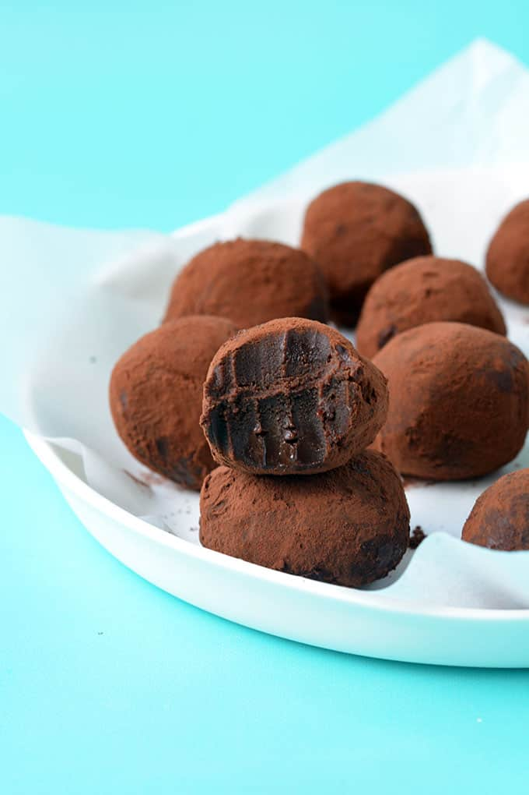

Chocolate Truffles

Description
Simple, easy to make, melt-in-your-mouth creamy chocolate truffles coated in cocoa powder.
Ingredients
- 285g dark chocolate (at least 55% cocoa butter
- 30g unsalted butter
- 125ml cream (35% fat)
- Cocoa powder or coatings of your choice
Steps
Making chocolate ganache
- Place the ingredients in a microwave safe bowl.
- Microwave on high for 75 seconds.
- Cover the bowl with a plate and let it rest for 5 minutes.
- Stir until the chocolate ganache is melted and smooth.
- Cover with plastic wrap and refrigerate for 5 hours.
- Refrigerate a plate or tray together with the bowl.
Rolling the truffle balls
- Place cocoa or coatings in a small bowl or plate.
- Prepare an ice pack to cool your hands - this can be any frozen bag covered with paper towels.
- Use a cookie scoop to measure out a portion of truffle and place it on the pre-refrigerated plate or tray.
- If the truffles are too soft after scooping, cover with plastic wrap and refrigerate for another 30 minutes-1 hour.
- Cool your hands and roll all the truffles into a ball. If they become soft again, refrigerate as above.
- Coat the truffles in cocoa powder/coating of your choice.
- Serve at room temperature or store in the freezer for up to two weeks!